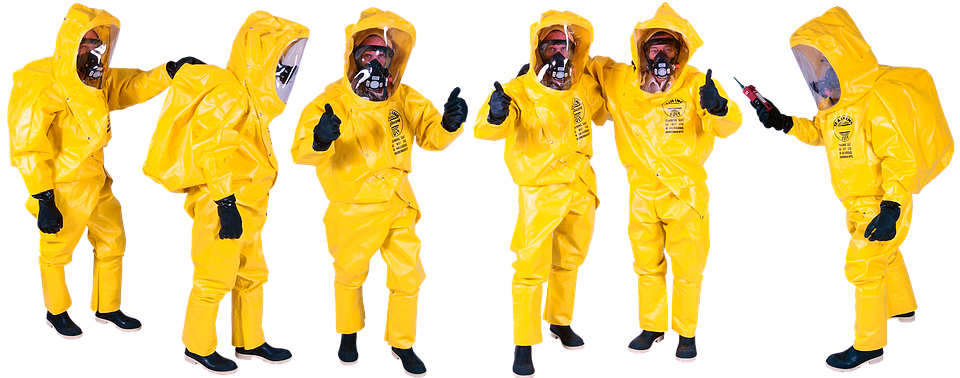

Confinement a trop rimé souvent avec isolement. Vous avez peut-être fait partie des plusieurs millions de personnes qui ont été forcées de rester chez elles en isolement ou en confinement en raison de l’épidémie de la maladie à coronavirus (COVID-19). Même après le confinement, la distanciation sociale et l’interruption de nos routines quotidiennes représentent un défi pour tout le monde.

En ces temps de confinement, le désir de nature est palpable, exacerbé par la venue des beaux jours. Nombreux sont ceux en effet qui ont bravé les interdits pour profiter qui d’un chemin forestier, qui d’un sentier littoral, qui d’une simple bande herbeuse au cœur de villes. Mais cette attirance renouvelée pour la nature ne se résume pas, loin de là, à ces vaines tentatives pour fuir, l’espace d’un instant, l’étroitesse des pièces d’habitation.
Où et comment se retrouver pendant la crise COVID ?
VIRTUEL Le plus safe
Être en relation avec les autres est un excellent moyen de gérer le stress. En ces temps de COVID-19, nous voyons comment des petits gestes de bonté envers les autres peuvent nous inspirer tous. Même si vous êtes physiquement isolé(e), vous pouvez maintenir vos relations sociales soit en ligne, soit en appelant des amis et des membres de votre famille.
NATUREL Le plus sain
Si le monde virtuel ne vous suffit pas, vous pouvez toujours retrouver vos amis dans un espace ouvert, en pleine nature en respectant bien sûr les règles de distanciation sociale. Vous pouvez retrouver toutes les informations sur les précautions à prendre via le site du gouvernement.